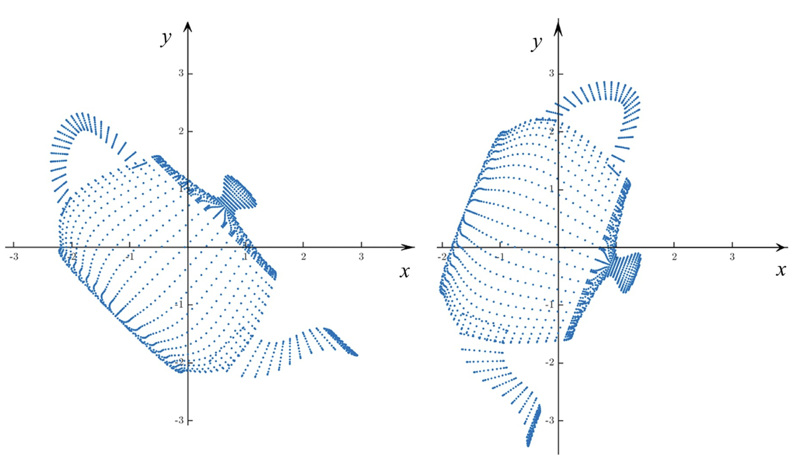
6 Principal Component Analysis
6.1 Why PCA?
PCA is a powerful exploratory statistical tool that can
- reduce many variables (p) into a few linear combinations (principal components) that preserve most variation,
- build summary indices and visualize structure (clusters, outliers),
- and serve as a first step before applying other statistical methods (e.g., regression, clustering, or classification).
6.1.1 Motivating Examples (Saccenti 2023)
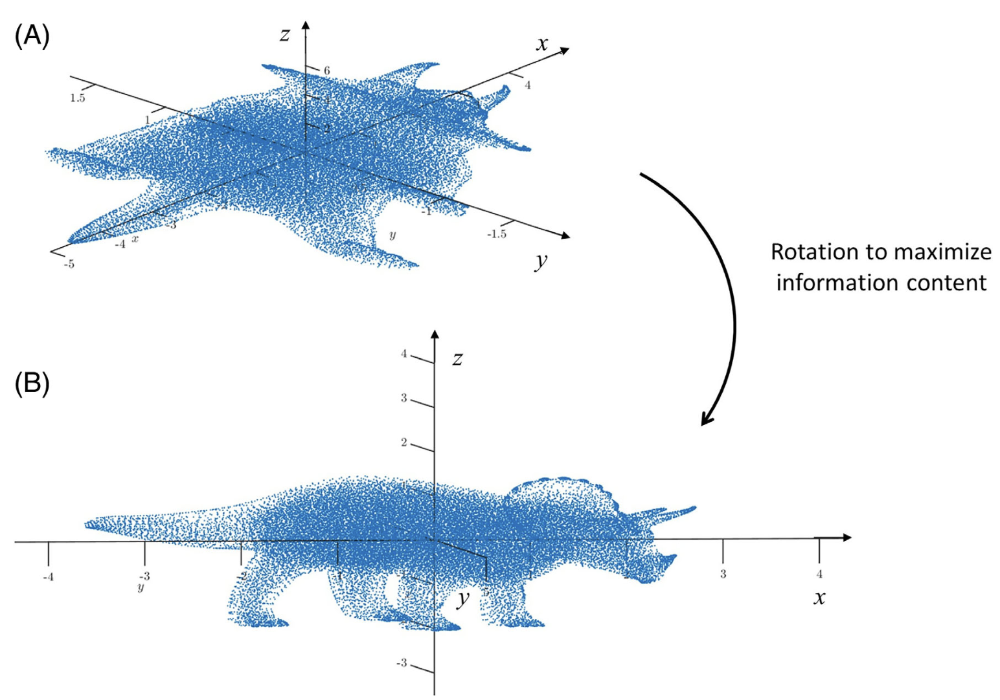
- Rotation can change the amount of information along different dimensions.
- Some rotations can provide more information than others.
- Rotation does not change the distances between points.
- PCA is a statistical tool to detect and visualize the structure of high-dimensional data and obtain its low-dimensional representation
6.2 Geometric Interpretation
6.2.1 Basic Idea
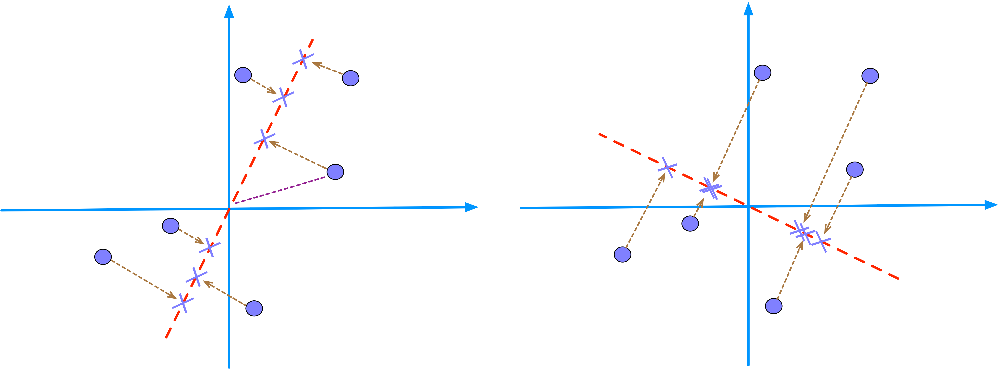
- PCA searches for a line (e.g., the red dashed line) that minimizes the distances from the data points (circles) to the line.
- Equivalently, PCA searches for a line (e.g., the red dashed line) that maximizes the distances from the projected points (cross signs) to origin.
- The average of the sum of squared distances is called the eigenvalue.
- PC1 is the direction that captures the most variation in the data (or that makes the data looks the most spread out).
- PC2 is the next best, but perpendicular, so it explains whatever variation PC1 does not capture.
- PC scores are just the coordinates of each point in that rotated system.
6.2.2 Illustrating Example
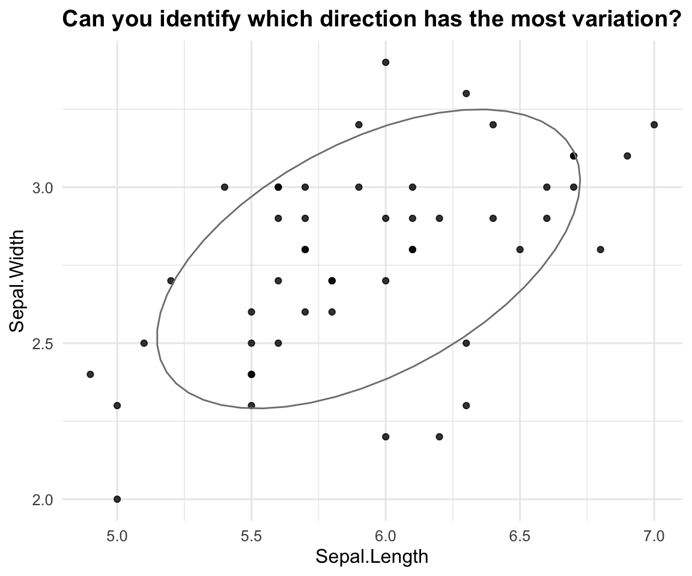
View Solution
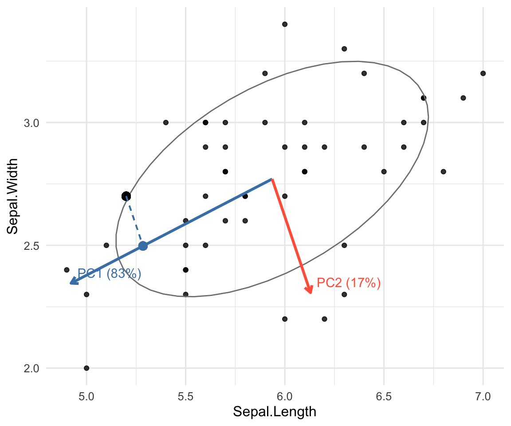
iris data: axes, variance, and projection. Arrows = PC directions at the mean; dashed line = projection (PC score) onto PC1.6.2.3 Review of Spectral Decomposition
Recall from Chapter 3 that for any p\times p symmetric matrix A, its spectral decomposition is A = \lambda_1 \mathbf{e}_1 \mathbf{e}_1^{\top} + \lambda_2 \mathbf{e}_2 \mathbf{e}_2^{\top} + \cdots + \lambda_p \mathbf{e}_p \mathbf{e}_p^{\top}
- \lambda_1\geq \lambda_2\geq \cdots \geq \lambda_p are eigenvalues of A.
- \mathbf{e}_j’s are corresponding eigenvectors of A.
Some Facts
Suppose that you obtain a p\times p covariance (or correlation) matrix for p variables from the data.
- The number of eigenvalues are the same as the number of observed variables.
- The sum of the eigenvalues equals the trace of the covariance matrix.
- For a correlation matrix, this would be p, since all diagonal is 1’s.
- The sum of the eigenvalues gives the total variance of the data.
- The product of the eigenvalues equals the determinant of the covariance matrix.
- The determinant of covariance matrix measures the generalized variance in the data.
- The number of non-zero eigenvalues is the rank of the matrix.
Interpretation of Covariance Matrix
- The first eigenvector represents the direction of maximum variation and the first eigenvalue represents the amount of variation in the data.
- The second eigenvector is the director of maximum variation that is orthogonal to the first eigenvector, and the second eigenvalue represents its variation.
- All eigenvectors are directions of variation, orthogonal to all other eigenvectors. The eigenvalues are their variances.
6.2.4 The Mathematics Behind PCA
- Let X=(X_1, X_2, \ldots, X_p)^\top denote a random vector with covariance matrix \Sigma.
- We seek weight vectors \mathbf{a}_1,\dots,\mathbf{a}_p and scores Y_k = \mathbf{a}_k'X such that:
- Y_1 has max variance among all unit-length \mathbf{a}_1,
- Y_2 has max variance subject to being uncorrelated with Y_1,
- … and so on.
- Suppose that \Sigma has spectral decomposition with eigenpairs (\lambda_k, \mathbf{e}_k), k=1,\ldots, p, and \lambda_1 \ge \cdots \ge \lambda_p.
- The k-th principal component (PC) is Y_k = \mathbf{e}_k'X.
- \mathrm{Var}(Y_k) = \lambda_k represents the variance of the score Y_k.
- Proportion of total variance explained by PC k is \lambda_k / \sum_{j=1}^p \lambda_j.
- \mathbf{e}_k represents the PC direction with its elements called loadings.
- In practice, we have multiple observations \mathbf{x}_1, \ldots, \mathbf{x}_n from the random vector X. Same idea applies but with notations changed.
- We seek weight vectors \mathbf{a}_1,\dots,\mathbf{a}_p and scores y_{ik} = \mathbf{a}_k^\top \mathbf{x}_i subject to the same constraints above.
- PCA can be applied for raw data or standardized data (z-scores).
6.3 PCA via prcomp
Let’s start by creating a simple 2D dataset where the two variables, X1 and X2, are clearly correlated.
R Code: Simulation and Visualization
library(MASS)
library(ggplot2)
library(dplyr)
set.seed(4750)
# Create correlated data
cov_matrix <- matrix(c(10, 8, 8, 10), nrow = 2)
data_orig <- as.data.frame(MASS::mvrnorm(n = 200, mu = c(0, 0),
Sigma = cov_matrix))
colnames(data_orig) <- c("X1", "X2")
ggplot(data_orig, aes(x = X1, y = X2)) +
geom_point(alpha = 0.7, color = "blue") +
coord_fixed(xlim = c(-10, 10), ylim = c(-10, 10)) +
geom_vline(xintercept = 0) +
geom_hline(yintercept = 0) +
labs(title = "Original Correlated Data") +
theme_bw()
cov_orig <- cov(data_orig)
cat("Original Covariance Matrix:\n")
print(cov_orig)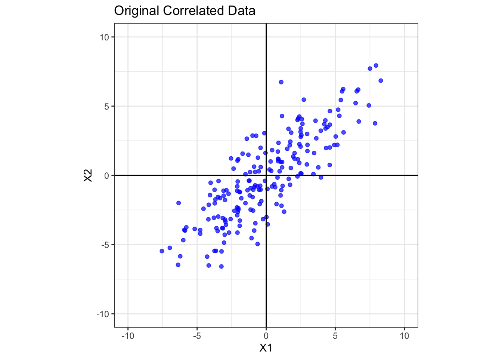
Original Covariance Matrix: X1 X2
X1 10.964268 8.577499
X2 8.577499 9.737786The data points form a tilted oval shape, indicating a strong positive correlation between X1 and X2. The covariance matrix confirms this, with a large positive off-diagonal value of 8.58. The variances of X1 and X2 are 10.96 and 9.74 respectively.
Now, we perform PCA to find the new axes (the principal components) that best align with the data’s spread.
# Perform PCA
fit <- prcomp(data_orig, center=TRUE)
str(fit)List of 5
$ sdev : num [1:2] 4.35 1.32
$ rotation: num [1:2, 1:2] 0.732 0.681 0.681 -0.732
..- attr(*, "dimnames")=List of 2
.. ..$ : chr [1:2] "X1" "X2"
.. ..$ : chr [1:2] "PC1" "PC2"
$ center : Named num [1:2] 0.031 -0.0625
..- attr(*, "names")= chr [1:2] "X1" "X2"
$ scale : logi FALSE
$ x : num [1:200, 1:2] -1.008 -0.675 8.176 -4.017 -1.704 ...
..- attr(*, "dimnames")=List of 2
.. ..$ : NULL
.. ..$ : chr [1:2] "PC1" "PC2"
- attr(*, "class")= chr "prcomp"Output interpretation:
sdev: standard deviations of the PC scores (or square roots of eigenvalues of the covariance matrix). This variable can be used to producescree plot, see Section 6.5.2.center: The mean of each column of data matrix.rotation: The rotation matrix that contains the PC directions (or elements of eigenvectors).x: a n\times p matrix of PC scores which is the centered and scaled (if requested) data multiplied byrotationmatrix.
fit$rotation PC1 PC2
X1 0.7318853 0.6814278
X2 0.6814278 -0.7318853The fit$rotation gives the PC directions with the PC1 in the first column, PC2 in the second column, and so on.
PCA via Spectral Decomposition
The PCA via the prcomp can be performed via Spectral Decomposition with the R code below.
X = as.matrix(data_orig)
Xc = X - matrix(1, nrow(data_orig), ncol=1) %*%
t(colMeans(data_orig))
S = cov(Xc)
E = eigen(S)
E eigen() decomposition
$values
[1] 18.950420 1.751635
$vectors
[,1] [,2]
[1,] -0.7318853 0.6814278
[2,] -0.6814278 -0.7318853Y = Xc%*%E$vectors
head(Y) [,1] [,2]
[1,] 1.0076182 -2.7013675
[2,] 0.6745194 -1.0377092
[3,] -8.1757410 -0.7689785
[4,] 4.0166282 0.4896621
[5,] 1.7039008 -0.2043875
[6,] 3.6023146 -1.3037205E$values: the eigenvalues of covariance matrix of centered data, which are the same as the square offit$sdev.E$vector: the eigenvectors of covariance matrix of centered data, which are the same asfit$rotation.Y: a matrix of PC scores, which is the same asfit$x.
R Code: Visualize New Axes
ggplot(data_orig, aes(x = X1, y = X2)) +
geom_point(alpha = 0.7, color = "blue") +
coord_fixed(xlim = c(-10, 10), ylim = c(-10, 10)) +
geom_vline(xintercept = 0) +
geom_hline(yintercept = 0) +
# Add the principal component axes as red vectors
geom_segment(data = as.data.frame(fit$rotation),
aes(x = 0, y = 0, xend = PC1*10,
yend = PC2*10),
arrow = arrow(length = unit(0.2, "cm")),
color = "red", linewidth = 1) +
annotate("text", x = 7, y = 8, label = "PC1 Axis",
color = "red", size = 5) +
annotate("text", x = 8, y = -8, label = "PC2 Axis",
color = "red", size = 5) +
labs(title = "Original Data with New PC Axes") +
theme_bw()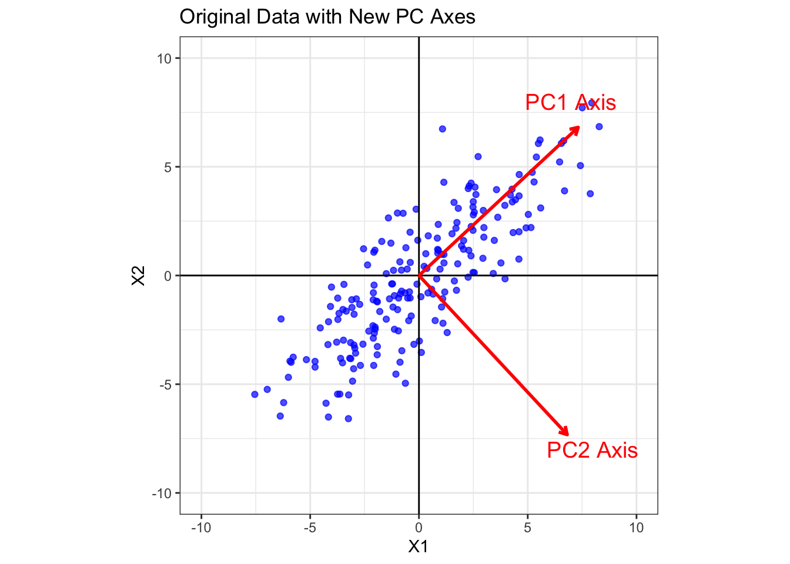
Note: PCA has found two new orthogonal axes. PC1 points along the direction of maximum variance (the long axis of the data cloud), which is defined by (0.73, 0.68). PC2 is perpendicular to PC1 and points along the direction of the next largest variance, which is defined by (0.68, -0.73).
6.4 PC Scores
The final step is to project our original data points onto these new axes. This is equivalent to rotating the entire dataset so that the principal component axes become our new x and y axes. The resulting coordinates are the principal component scores.
For i-th observation \mathbf{x}_i, the PC score y_{ik} corresponding to the k-th PC is given by \begin{aligned} y_{ik} &= \mathbf{e}_k^\top (\mathbf{x}_i -\bar{\mathbf{x}}) = \sum_{j=1}^p e_{kj} (x_{ij}-\bar{x}_j) = e_{k1}(x_{i1}-\bar{x}_1) + \ldots + e_{kp}(x_{ip}-\bar{x}_p), \end{aligned} where \mathbf{e}_k is the k-th eigenvector of centered data. PC score defined in the equation above provides a way to interpret its meaning.
- The coefficients in the eigenvector \mathbf{e}_k are called loadings and determine how all the p variables in each data point are weighted into the new data point (PC score).
- Each observation \mathbf{x}_i is projected into the k-th PC axis direction defined by \mathbf{e}_k.
Interpretation of PC Scores
- The sign of a PC score (e.g., y_{ik}) indicates which side (negative or positive) of the PC axis the data point is on (relative to the data mean).
- The magnitude of a PC score measures how far the observation lies along that PC’s direction.
- For the k-th PC, e_{kj} is called a loading:
- If e_{kj}>0 and an observation has a large positive score, it indicates an above average impact on variable j.
- If e_{kj}<0 and the score is positive, it indicates an below average impact on variable j.
- A large negative score flips those statements.
- Near zero score means average impact along that PC.
# PC Scores
head(fit$x) PC1 PC2
[1,] -1.0076182 -2.7013675
[2,] -0.6745194 -1.0377092
[3,] 8.1757410 -0.7689785
[4,] -4.0166282 0.4896621
[5,] -1.7039008 -0.2043875
[6,] -3.6023146 -1.3037205# Calculate the new covariance matrix
cov_rotated = cov(as.matrix(fit$x))
cov_rotated PC1 PC2
PC1 1.895042e+01 -9.466464e-15
PC2 -9.466464e-15 1.751635e+00The covariance of PC scores is a diagonal matrix theoretically because all the PC directions are perpendicular to each other. The off-diagonal element is now essentially zero (-9.5e-15). This is the magic of PCA! After the rotation, the new variables (PC1 and PC2) are uncorrelated.
Furthermore, the variances have been redistributed. The variance is now maximized along the PC1 axis (Var(PC1) = 18.95) and minimized along the PC2 axis (Var(PC2) = 1.75). Notice that the total variance remains the same (20.7 vs. 20.7). The figure below shows the PC scores on the PC axes.
R Code: Visualize PC Scores
df.PC = as.matrix(fit$x)
ggplot(df.PC, aes(x = PC1, y = PC2)) +
geom_point(alpha = 0.7, color = "purple") +
coord_fixed(xlim = c(-10, 10), ylim = c(-5, 5)) +
geom_vline(xintercept = 0) +
geom_hline(yintercept = 0) +
labs(
title = "Rotated Data (Principal Component Scores)",
x = "PC1",
y = "PC2"
) +
theme_bw()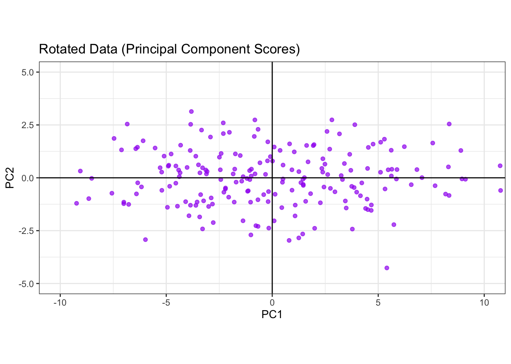
6.5 PC Plots
6.5.1 Biplot
A biplot is a 2-D plot that shows both observations and variables from a multivariate dataset on the same axes—most commonly the first two principal components (PC1 & PC2). It is a compact way to read:
- where samples sit relative to each other (scores), and
- how variables relate to those axes (loadings).
library(factoextra)
fviz_pca(fit,
repel=TRUE,
labelsize = 1.1, alpha=0.5) +
labs(title="Biplot of simulated data") 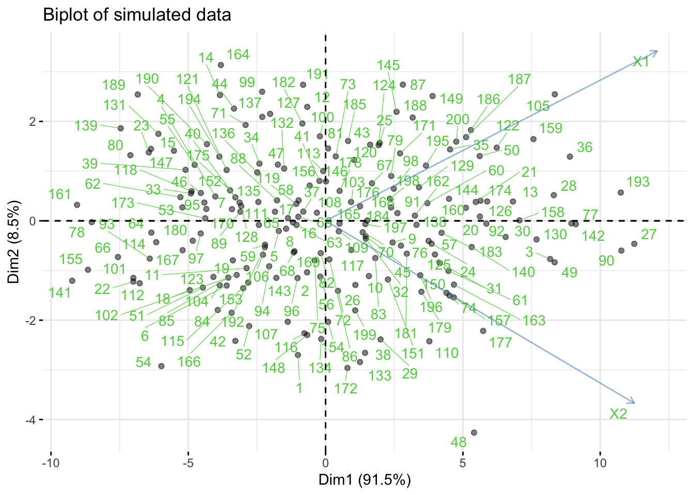
- The
fviz_pacfunction produces aggplot2graph. Dim1andDim2are the first two principal component axes.
6.5.2 Scree Plot
A scree plot shows the component variations against each component number so that it indicates how much the variations vary across different PCs. The component variations can be obtained via two ways:
- If the function
prcompis used for PCA, the component variation can be obtained viaprcomp’s outputsdev. - If a spectral decomposition is used, the component variations are just eigenvalues of the sample covariance matrix.
# use R built-in dataset `mtcars` (engines & performance)
dat = mtcars[, c("mpg","disp","hp","wt","qsec")]
fit.mtcars = prcomp(dat)
summary(fit.mtcars)Importance of components:
PC1 PC2 PC3 PC4 PC5
Standard deviation 136.5192 38.12970 3.03933 1.20657 0.2991
Proportion of Variance 0.9271 0.07232 0.00046 0.00007 0.0000
Cumulative Proportion 0.9271 0.99946 0.99992 1.00000 1.0000df.scree = data.frame(index=1:length(fit.mtcars$sdev),
var=fit.mtcars$sdev^2)
p1 = ggplot(df.scree, aes(x=index, y=var)) +
geom_point() + geom_line() +
labs(x="Component Number",
y="Component Variation")
df.scree$eigenval = eigen(cov(dat))$values
p2 = ggplot(df.scree, aes(x=index, y=eigenval)) +
geom_point() + geom_line() +
labs(x="Component Number",
y="Component Variation")
patchwork::wrap_plots(p1,p2,ncol=2) 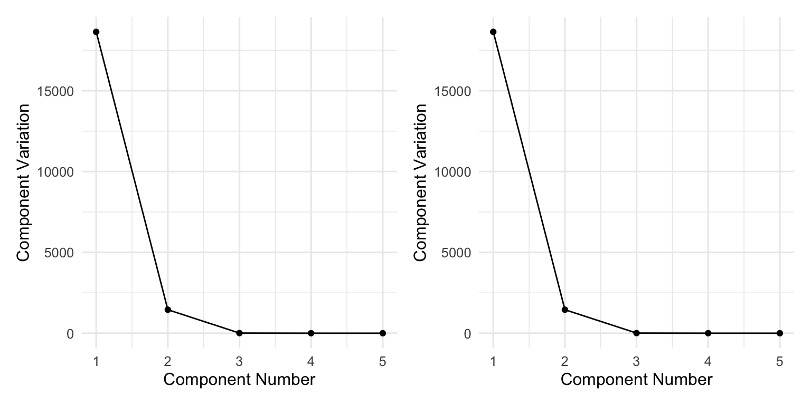
How Many PCs Do We Need?
In practice, one can choose the number of PCs based on scree plot, since one can decide the trade-off between the number of PCs and the percentage of variations. This rule is often used in practice.
- If we keep a small number of PCs, we could achieve substantial amoung of dimension reduction in the new datasets (PC scores); at the same time, the percentage of variation preserved might be small (say less than 80\%), resulting in severe information loss.
- If we keep a large number of PCs, we could preserve most variations (say more than 95\%) but there might be no computational gain in terms of dimension reduction.
- A good rule of thumb is to select the number of PCs such that at least 85% of variation is captured.
6.5.3 When to Standardize?
- Standardize (work with the correlation matrix) when variables are on very different scales,
- or you want to emphasize correlations over raw variances. Otherwise, use the covariance matrix.
6.6 PCA with Covariance/Correlation Matrix
In many real-world applications, the data might not be directly available to users due to various reasons (e.g., privacy issues, regulatory policy); however, a covariance matrix or correlation matrix might be available. In this case, PCA can still be performed via the R function princomp().
Let us illustrate princomp() with the iris dataset.
R Code: Iris data
# Let's pretend we only have the covariance matrix
data("iris")
S = cov(iris[,1:4])R Code: PCA via princomp()
fit = princomp(covmat=S, cor=FALSE, scores=TRUE)
summary(fit)Importance of components:
Comp.1 Comp.2 Comp.3 Comp.4
Standard deviation 2.0562689 0.49261623 0.27965961 0.154386181
Proportion of Variance 0.9246187 0.05306648 0.01710261 0.005212184
Cumulative Proportion 0.9246187 0.97768521 0.99478782 1.000000000R Code: PCA loadings
print(fit$loadings)
Loadings:
Comp.1 Comp.2 Comp.3 Comp.4
Sepal.Length 0.361 0.657 0.582 0.315
Sepal.Width 0.730 -0.598 -0.320
Petal.Length 0.857 -0.173 -0.480
Petal.Width 0.358 -0.546 0.754
Comp.1 Comp.2 Comp.3 Comp.4
SS loadings 1.00 1.00 1.00 1.00
Proportion Var 0.25 0.25 0.25 0.25
Cumulative Var 0.25 0.50 0.75 1.00R Code: Scree diagram
plot(fit,
main="Scree diagram")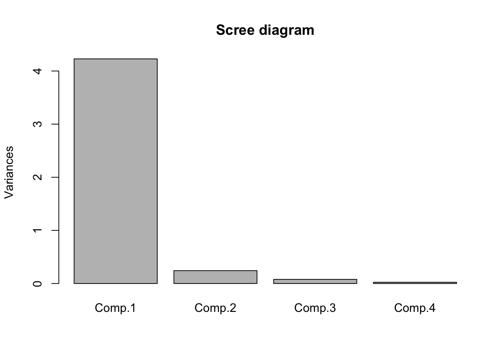
PC scores are not available
Since we only pass the covariance/correlation to the R function princomp(), PC scores could not be obtained.
6.7 Example: Road Race Data
Road Race Data
This analysis examines scatter plot matrices and computes principal components for the 10k segments of a 100k road race. The data come from Everitt (1994) stored in the file race100k.csv. There is one line of data for each of 80 racers with eleven numbers on each line. The first ten columns give the times (minutes) to complete successive 10k segments of the race. The last column has the racer’s age (in years). Answer the following questions.
dat = read.csv("race100k.csv")
head(dat)
Step 1: Data Visualization
Use the pairs function to create a scatter plot matrix and interpret it. Note that the columns to be included in the plot are put into the variable choose=c(1,2,6,11). The panel.smooth function uses locally weighted regression to pass a smooth curve through each plot. The abline function uses least squares to fit a straight line to each plot. Including the line helps you to see if most of the marginal association between two variables on can be described by a straight line.
R Code: Data Visualization
p1 = ncol(dat)
p = p1 - 1
n = nrow(dat)
choose = c(1,2,6,10,11)
par(pch=1,cex=1.0)
pairs(dat[ ,choose],
labels=c("0-10k time",
"10-20k time",
"50-60k time",
"90-100k time","age"),
panel=function(x,y){
panel.smooth(x,y)
abline(lsfit(x,y),lty=2)
})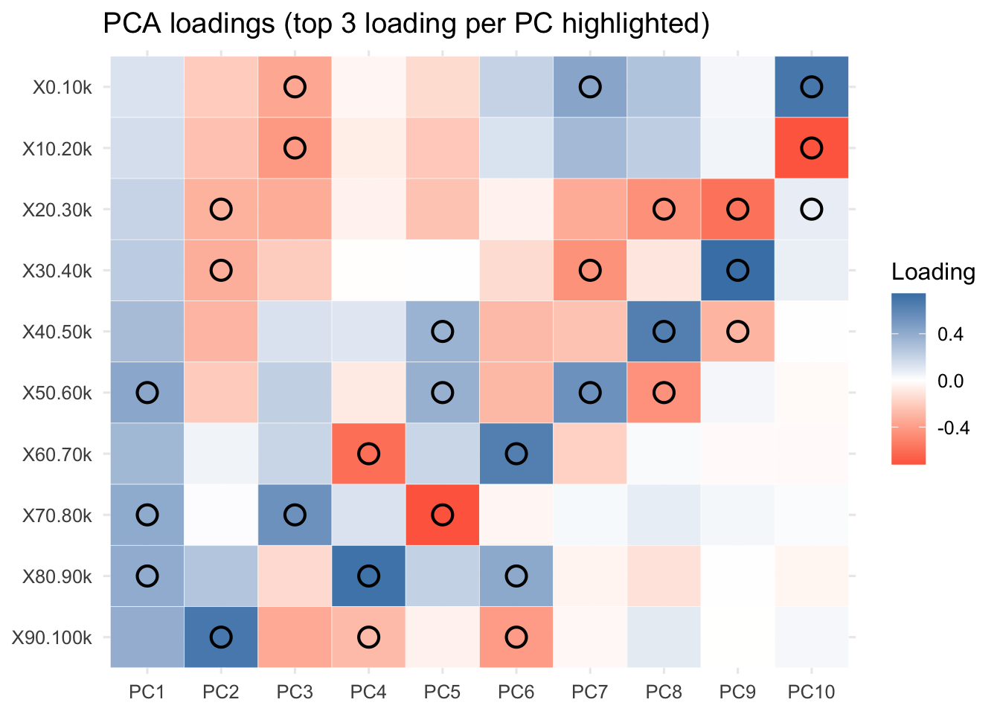
Interpretations:
- There is a very strong positive correlation between the times to complete the first two 10k legs of the race.
- The correlations of the completion times for the sixth and tenth segments of the race with the first segment of the race are weaker and they appear to be curved trends in the plots.
- Similar patterns exist for the relationship between the completion times for the second segment of the race with the completion times for the sixth and tenth segments of the race.
- There is a moderately strong positive correlation between the completion times for the sixth and tenth segments of the race.
- There is a group of at nine runners who relatively long completion times (running relatively slowly) for the first two legs of the race but had middle completion times for the sixth and tenth legs of the race (average finishers).
Step 2: Perform PCA
Compute principal components from the covariance matrix.
R Code: PCA
fit = prcomp(dat[, -p1])R Code: PC Score Standard Deviations
fit$sdev [1] 27.123463 9.923923 7.297834 6.102917 5.102212 4.151834 2.834300
[8] 2.060942 1.547235 1.135819R Code: PC Directions
fit$rotation PC1 PC2 PC3 PC4 PC5 PC6
X0.10k 0.1287926 -0.21059911 -0.3615464 -0.033543077 -0.147271116 0.20575194
X10.20k 0.1519795 -0.24907923 -0.4168216 -0.070771273 -0.223835122 0.13094125
X20.30k 0.1991613 -0.31427990 -0.3411287 -0.053862467 -0.247016251 -0.05256055
X30.40k 0.2397402 -0.33004401 -0.2026687 -0.006573526 -0.004696149 -0.14386151
X40.50k 0.3144251 -0.30213368 0.1350869 0.110735209 0.356368957 -0.28455724
X50.60k 0.4223146 -0.21465890 0.2222736 -0.086787834 0.373032863 -0.29158828
X60.70k 0.3358642 0.04958843 0.1936251 -0.601557104 0.189706738 0.64355431
X70.80k 0.4066759 0.00858601 0.5380052 0.128950685 -0.719755126 -0.03482145
X80.90k 0.3990475 0.26746202 -0.1491748 0.717507174 0.209788222 0.41424585
X90.100k 0.3853990 0.68882130 -0.3482143 -0.278947530 -0.054501733 -0.40508138
PC7 PC8 PC9 PC10
X0.10k 0.43236280 0.28021009 0.038988136 0.690088073
X10.20k 0.32564920 0.22935824 0.046365827 -0.712785245
X20.30k -0.34345700 -0.45763871 -0.586752802 0.082695763
X30.40k -0.44789166 -0.10450365 0.745122555 0.070880091
X40.50k -0.24499887 0.64624348 -0.306079913 -0.005450226
X50.60k 0.53900089 -0.44941277 0.037927421 -0.022906843
X60.70k -0.18441808 0.02193712 -0.019261057 -0.019014886
X70.80k 0.02932921 0.08174832 0.036551593 0.018002601
X80.90k -0.04611157 -0.11324179 -0.002675703 -0.039845245
X90.100k -0.03004076 0.09451298 -0.002468560 0.032020909
Step 3: Interpret PCs
Interpret the meanings of the first three principal components.
R Code: Heat Map
load_df <- as.data.frame(fit$rotation) %>%
rownames_to_column("variable") %>%
pivot_longer(-variable, names_to = "PC", values_to = "loading") %>%
mutate(abs_loading = abs(loading))
K = 3
tops = load_df %>%
group_by(PC) %>%
slice_max(abs_loading, n = K, with_ties = FALSE) |>
ungroup() %>%
mutate(highlight = TRUE)
load_df = load_df %>%
left_join(tops %>% dplyr::select(variable, PC, highlight),
by = c("variable", "PC")) %>%
mutate(highlight = ifelse(is.na(highlight), FALSE, TRUE))
load_df = load_df %>%
mutate(PC_num = as.integer(str_extract(PC, "\\d+")),
PC = fct_reorder(PC, PC_num, .fun = min)) # PC1, PC2, PC3, ...
ggplot(load_df, aes(PC, fct_rev(variable), fill = loading)) +
geom_tile(color = "white") +
scale_fill_gradient2(
low = "tomato",
mid = "white",
high = "steelblue",
midpoint = 0
) +
geom_point(
data = subset(load_df, highlight),
shape = 21,
size = 4,
stroke = 1.1,
color = "black",
fill = NA
) +
labs(
x = NULL,
y = NULL,
fill = "Loading",
title = paste0("PCA loadings (top ", K, " loading per PC highlighted)")
) +
theme_minimal(base_size = 12)R Code: PC Loadings
L = as.data.frame(fit$rotation[, 1:3]) %>%
rownames_to_column("segment")
L$km = seq(5, 95, by = 10) # midpoints per 10k, adjust as you like
ggplot(
L %>%
tidyr::pivot_longer(
starts_with("PC"),
names_to = "PC",
values_to ="loading"),
aes(km, loading, color = PC)
) +
geom_hline(yintercept = 0, color = "grey60") +
geom_line(linewidth = 1.1) + geom_point() +
labs(x = "Distance (km)", y = "Loading",
title = "PCA loadings across the 100K race") +
theme_minimal()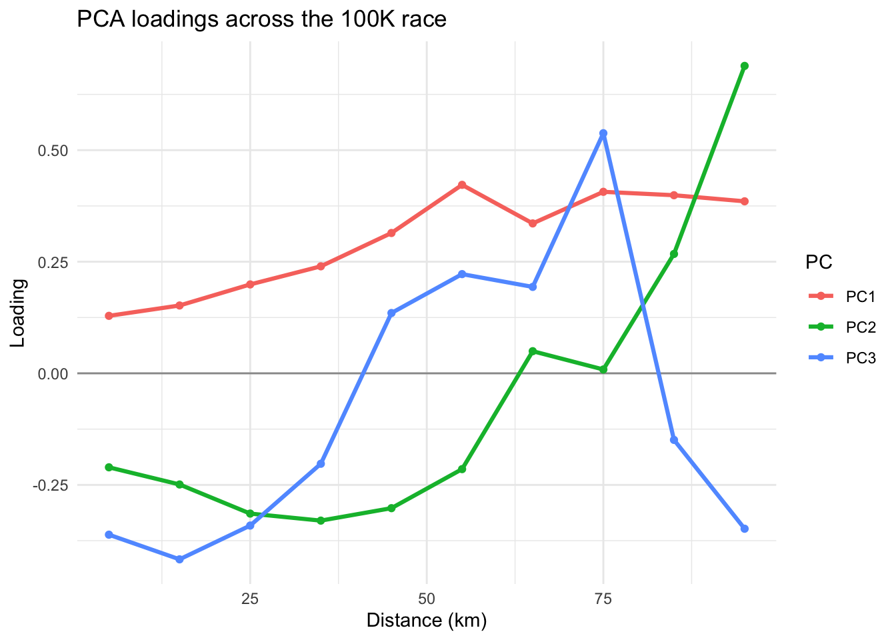
Interpretations: Large values of the data indicates slower than average in a segment. If loadings for early segments are negative and late segments positive, a large positive score comes from a runner who runs fast in early segments and slow in late segments. A negative score has the reverse explanation (slow early, strong finish). We should not focus on the signs of PCs since flipping the sign of a PC reverses the signs of both its loadings and scores.
- PC1 indicates an overall performance component with emphasis on the completion times for the last six legs of the race. Runners with small values (large negative values) of this component were the fastest runners overall and runners with large values for this component were the slowest runner overall.
- PC2 indicates that runners with large values for the second component had relatively fast (small) times for the first six legs of the race and relatively slow times for the last two legs of the race. These runners started relatively fast but finished relatively slow. Runners with negative values for this component started relatively slow and finished relatively fast. They conserved energy in the early stages of the race and had something left for a strong finish.
- PC3 indicates that runners with large positive values for the third component were relatively slow for the first four legs of the race, ran relatively fast during the next four legs of the race, and then had a weak finish. Runners with negative values for this component started fast, ran relatively slow in the middle of the race, and finished strong.
Step 4: How Many PCs
Calculate and report the total variation explained by each principal component, and the accumulative variation explained by the first three PCs.
PCA Fit Summary
summary(fit)Importance of components:
PC1 PC2 PC3 PC4 PC5 PC6 PC7
Standard deviation 27.1235 9.9239 7.29783 6.10292 5.10221 4.15183 2.83430
Proportion of Variance 0.7477 0.1001 0.05413 0.03785 0.02646 0.01752 0.00816
Cumulative Proportion 0.7477 0.8478 0.90194 0.93980 0.96625 0.98377 0.99194
PC8 PC9 PC10
Standard deviation 2.06094 1.54723 1.13582
Proportion of Variance 0.00432 0.00243 0.00131
Cumulative Proportion 0.99626 0.99869 1.00000Scree Plot
plot(fit$sdev^2,
xlab="Component Number",
ylab="Component Variance (eigenvalue)",
main="Scree Diagram", type="b")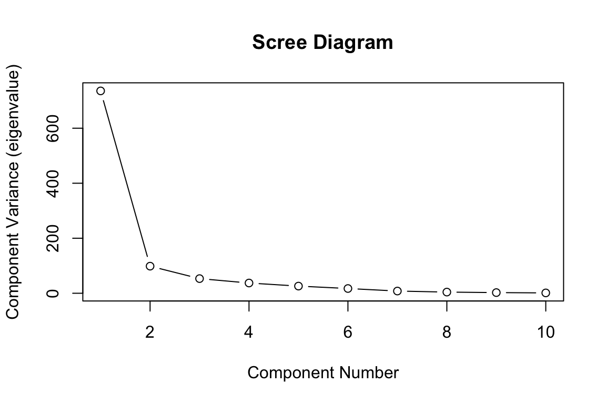
Step 5: Visualize PC Scores
Plot component scores for the first three principal components.
PC Scores
par(pch=1, cex=1)
pairs(fit$x[,c(1,2,3)], labels=c("PC1","PC2","PC3"))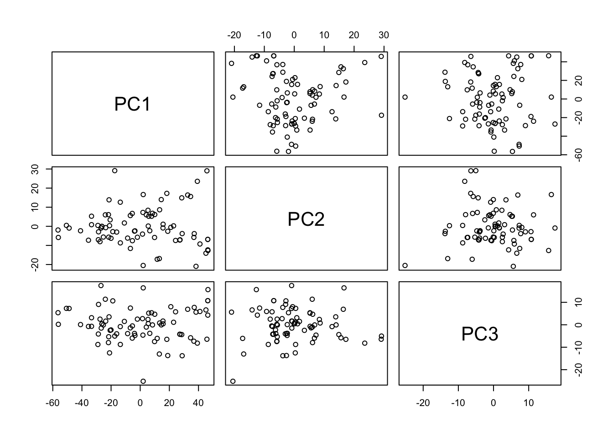
PC Scores
# or use biplots
g1 = factoextra::fviz_pca(fit,
axes = c(1,2),
repel=TRUE,
labelsize = 1.1, alpha=0.5)
g2 = factoextra::fviz_pca(fit,
axes = c(1,3),
repel=TRUE,
labelsize = 1.1, alpha=0.5)
g3 = factoextra::fviz_pca(fit,
axes = c(2,3),
repel=TRUE,
labelsize = 1.1, alpha=0.5)
patchwork::wrap_plots(g1,g2,g3,ncol=2)
Optional: Perform PCA on Standardized Data
This step is optional as all measurements have scales quite similar.
Standardization and Visualization
dat_sd = scale(dat, center=T, scale=T)
choose = c(1,2,5,10,11)
pairs(
dat_sd[, choose],
labels = c("0-10k time",
"10-20k time",
"50-60k time",
"90-100k time",
"age"),
panel = function(x, y) {
panel.smooth(x, y)
abline(lsfit(x, y), lty = 2)
}
)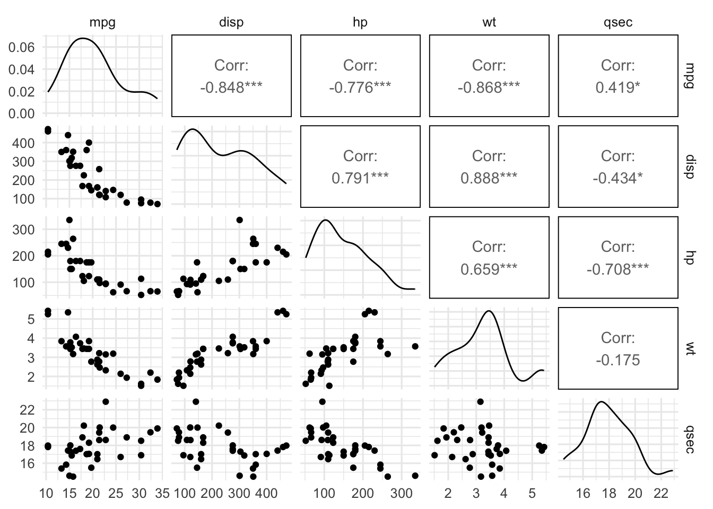
Correlation Matrix
racecor = var(dat_sd)
racecor X0.10k X10.20k X20.30k X30.40k X40.50k X50.60k
X0.10k 1.0000000 0.9510603 0.84458736 0.78585596 0.62053457 0.61789171
X10.20k 0.9510603 1.0000000 0.89031061 0.82612495 0.64144268 0.63276548
X20.30k 0.8445874 0.8903106 1.00000000 0.92108596 0.75594631 0.72509902
X30.40k 0.7858560 0.8261249 0.92108596 1.00000000 0.88690905 0.84185641
X40.50k 0.6205346 0.6414427 0.75594631 0.88690905 1.00000000 0.93641488
X50.60k 0.6178917 0.6327655 0.72509902 0.84185641 0.93641488 1.00000000
X60.70k 0.5313965 0.5409319 0.60502621 0.69065419 0.75419742 0.83957633
X70.80k 0.4773723 0.5054520 0.61998205 0.69821518 0.78578147 0.84032251
X80.90k 0.5423438 0.5338073 0.58357645 0.66735326 0.74134973 0.77257354
X90.100k 0.4142609 0.4381283 0.46725334 0.50857719 0.54174220 0.65591894
age 0.1491725 0.1271041 0.01218286 0.04680206 -0.01607529 -0.04241971
X60.70k X70.80k X80.90k X90.100k age
X0.10k 0.53139648 0.4773723 0.5423438 0.4142609 0.14917250
X10.20k 0.54093190 0.5054520 0.5338073 0.4381283 0.12710409
X20.30k 0.60502621 0.6199821 0.5835765 0.4672533 0.01218286
X30.40k 0.69065419 0.6982152 0.6673533 0.5085772 0.04680206
X40.50k 0.75419742 0.7857815 0.7413497 0.5417422 -0.01607529
X50.60k 0.83957633 0.8403225 0.7725735 0.6559189 -0.04241971
X60.70k 1.00000000 0.7796014 0.6972448 0.7191956 -0.04059097
X70.80k 0.77960144 1.0000000 0.7637562 0.6634709 -0.20674428
X80.90k 0.69724482 0.7637562 1.0000000 0.7797619 -0.12320048
X90.100k 0.71919560 0.6634709 0.7797619 1.0000000 -0.11289354
age -0.04059097 -0.2067443 -0.1232005 -0.1128935 1.00000000PCA on Standardized Data
fit1 = prcomp(dat_sd[,-p1])
fit1$sdev [1] 2.6912189 1.1331038 0.7439637 0.5451001 0.4536530 0.4279130 0.3300239
[8] 0.2204875 0.1984028 0.1923427PCA on Standardized Data
plot(
fit1$sdev^2,
xlab = "Component Number",
ylab = "Component Variance (eigenvalue)",
main = "Scree Diagram",
type = "b"
)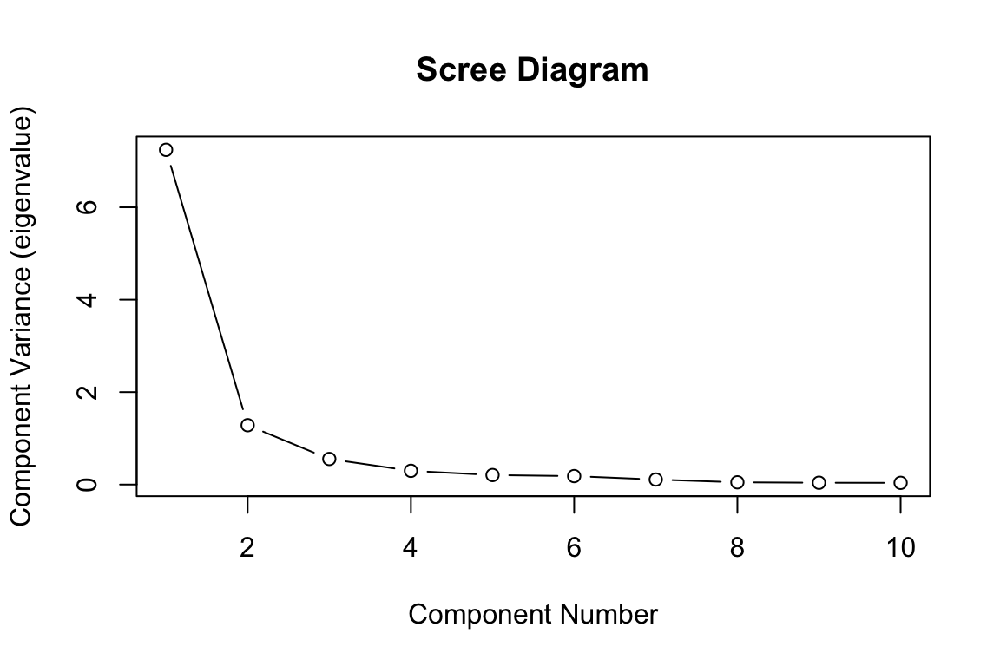
Step 6: Follow-Up Findings
Use the principal component scores from the raw data to look for differences among mature (age < 40) and senior (age > 40) runners. Mature runners will be indicated by M and senior runners will be indicated by S. Can we separate those two groups by using the first two principal component scores?
PC Scores by Age Group
race.type <- rep("M", n)
race.type[dat[, p1] >= 40] <- "S"
race.col <- rep("red", n)
race.col[dat[, p1] >= 40] <- "blue"
plot(
fit$x[, 1],
fit$x[, 2],
xlab = "PC1: Overall speed",
ylab = "PC2: Change in speed ",
type = "n"
)
text(
fit$x[, 1],
fit$x[, 2],
labels = race.type,
cex = 0.9,
col = race.col
)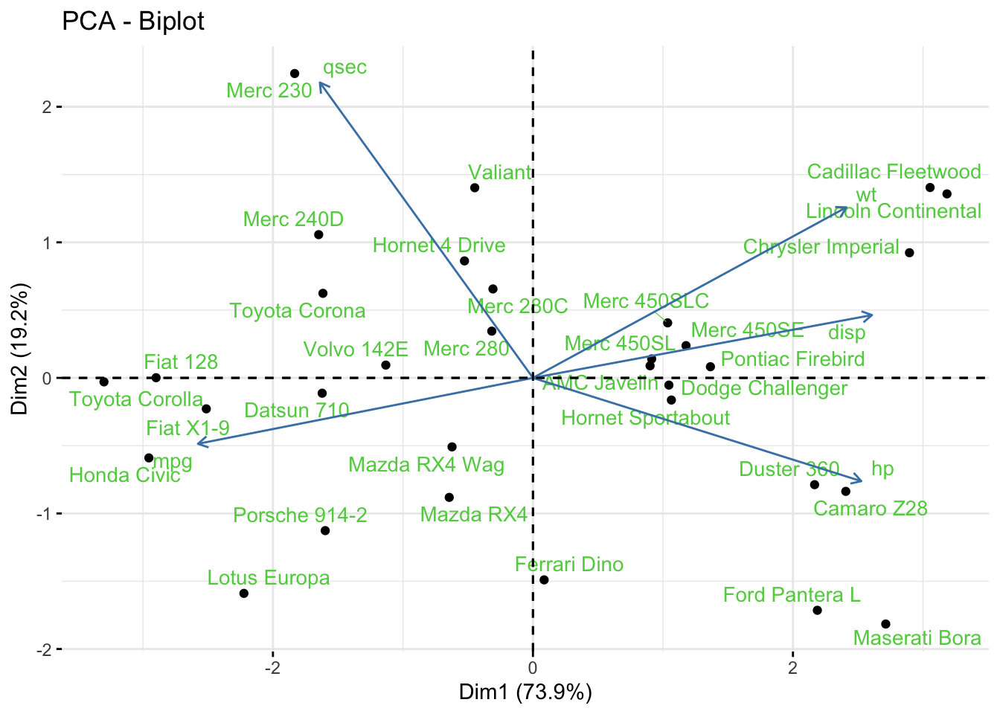
Interpretations:
- The four fastest runners were mature runners who were consistently fast across all 10 segments of the race. The mature runners have the most variability in scores for the second principal component, and they have a greater tendency to start fast and finish slow than the senior runners.
- One interesting further statistical analysis would be using hypothesis testing to compare the two groups (mature and senior) based on the PC scores.
Reflections
- The above question provides one way to extract information from the data. In practice, we often need to define our own questions related to the dataset and perform statistical analyses.
- Looking backwarks, if one is given the dataset without providing the research question, how can one formulate interesting research questions for the dataset and address them via PCA and multivariate statistical methods?
6.8 Exercises
6.8.1 Exercise 1: mtcars Data
Let us use the mtcars dataset to perform PCA and interpret the results.
dat = mtcars[, c("mpg","disp","hp","wt","qsec")]
head(dat)
View Solution
R Code: Scatterplot Matrix
GGally::ggpairs(dat)As the scatterplot indicates that the variables are on very different scales, it is helpful to perform PCA on standardized data.
R Code: PCA via prcomp
fit = prcomp(dat, center=TRUE, scale=TRUE)
summary(fit)Importance of components:
PC1 PC2 PC3 PC4 PC5
Standard deviation 1.9227 0.9803 0.39310 0.36215 0.23764
Proportion of Variance 0.7394 0.1922 0.03091 0.02623 0.01129
Cumulative Proportion 0.7394 0.9316 0.96247 0.98871 1.00000R Code: Scree Plot
plot(fit$sdev^2, xlab="Component Index", ylab="Component Variation")
R Code: Biplot
factoextra::fviz_pca_biplot(fit,
repel=TRUE,
labelsize = 1.2)
6.8.2 Exercise 2: PCA for Image Compression
An image is a matrix of pixels with values that represent the intensity of the pixel, where 0=white and 1=black. The jpeg format image has three channels: red, green, blue. If the image size is too large or for regulatory or privacy issues, one is often interested in compressing the image size and working with a low-resolution image. This task can be achieved using PCA introduced in this chapter. Here you can use any image for this task, but I will use an image of the Great Wall.
- Load the image into R and extract the green channel.
View Solution
Code
library(jpeg)
#the jpeg has 3 channels: red, green, blue
#for simplicity of the example, I am only
#reading the green channel
dat <- readJPEG("./figures/greatwall.jpg")[,,2]
#You can have a look at the image
plot(1:2, type='n', axes=F, ann=F)
rasterImage(dat, 1, 2, 2, 1)- Check the dimension of the image and plot heatmap of the correlation matrix using the function
heatmap.2()from the R packagegplots.
View Solution
Code
dim(dat)[1] 750 750Code
library(gplots)
# compute correlations in terms of red, yellow and darkgreen
col.correlation <- colorRampPalette(
c("red","yellow","darkgreen"),
space = "rgb")(30)
# This could be time consuming if image dimension is too large
gplots::heatmap.2(cor(dat),
Rowv = F, Colv = F,
dendrogram = "none",
trace="none",
col=col.correlation)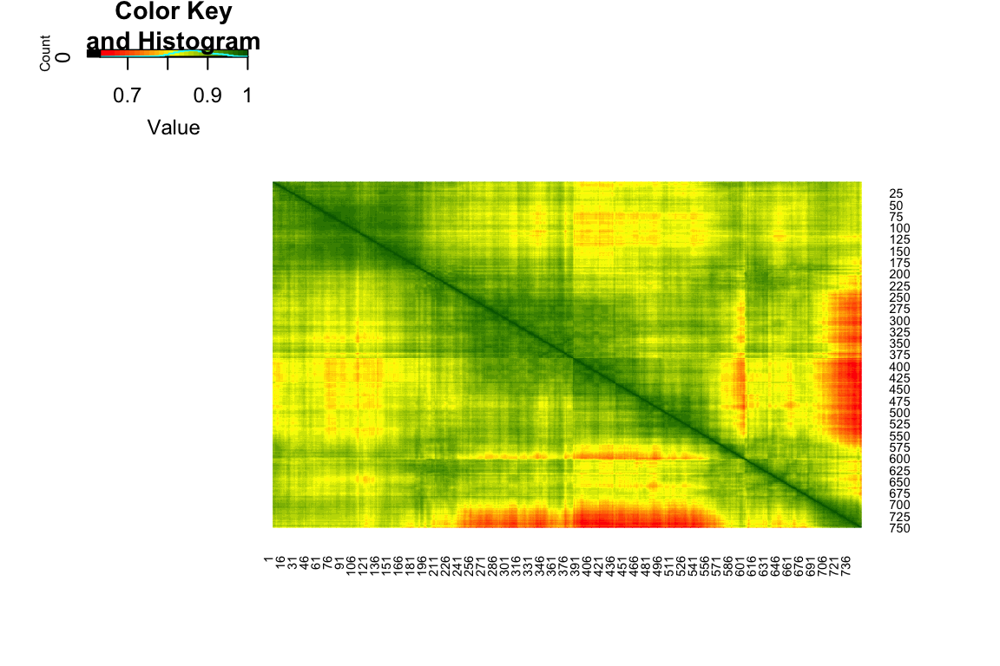
- Perform PCA on the correlation matrix of the image and plot the scree diagram.
View Solution
Code
# PCA
dat.pca = prcomp(dat, center=FALSE)
plot(dat.pca$sdev[1:20]^2, xlab="Component Number",
ylab="Component Variance (eigenvalue)",
main="Scree Diagram", type="b")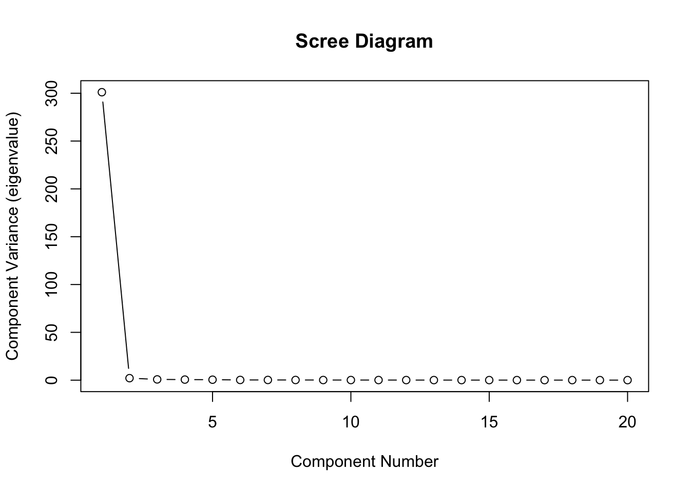
- Recover the image using the first few PCs.
View Solution
Code
#The intensities given by the first m components
m = 10
dat.pca2 <- dat.pca$x[,1:m] %*% t(dat.pca$rotation[,1:m])
dat.pca2[dat.pca2>1] <-1
dat.pca2[dat.pca2<0] <-0
#You can have a look at the image
par(mfrow=c(1,2))
plot(1:2, type='n', axes=F, ann=F)
title ("Original image")
rasterImage(dat, 1, 2, 2, 1)
plot(1:2, type='n', axes=F, ann=F)
title(paste0("PCA constructed image \n with ", m, " components"))
rasterImage(dat.pca2, 1, 2, 2, 1)- Compression for the colored image with three channels simultaneously. Plot the PCA constructed image using 50 principal components. You could try different number of principal components and compare their differences.
View Solution
Code
dat = readJPEG("./figures/greatwall.jpg")
# dat is now a list with three elements
#corresponding to the channels RBG
#we will do PCA in each element
dat.rbg.pca<- apply(dat, 3, prcomp, center = FALSE) Code
#Computes the intensities using m components
m = 50
dat.pca2 <- lapply(dat.rbg.pca,
function(channel.pca) {
jcomp = channel.pca$x[,1:m] %*% t(channel.pca$rotation[,1:m])
jcomp[jcomp>1] <-1
jcomp[jcomp<0] <-0
return(jcomp)}
)
#Transforms the above list into an array
dat.pca2<-array(as.numeric(unlist(dat.pca2)),
dim=dim(dat))
#You can have a look at the image
par(mfrow=c(1,2))
plot(1:2, type='n', axes=F, ann=F)
title ("Original image")
rasterImage(dat, 1, 2, 2, 1)
plot(1:2, type='n', axes=F, ann=F)
title (paste0("PCA constructed image \n with ", m, " components"))
rasterImage(dat.pca2, 1, 2, 2, 1)